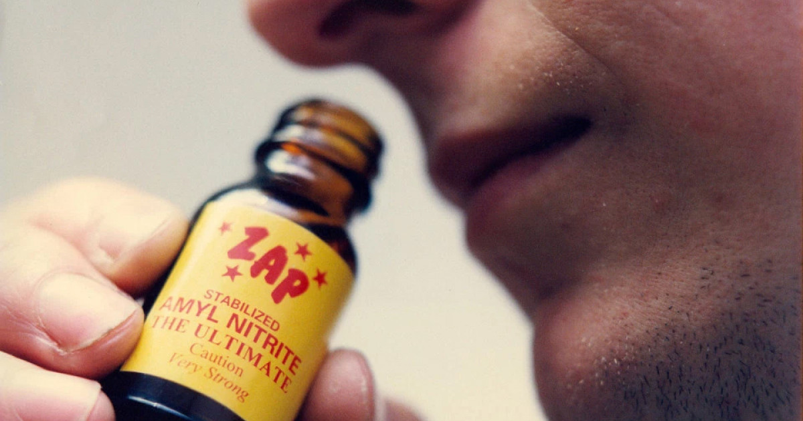

Popper
Clasificación: depresoras/estimulantes
Efectos Adversos:
Confusión; náuseas; habla arrastrada; falta de coordinación; euforia; mareo; somnolencia; desinhibición, sensación de vértigo, alucinaciones o delirios; dolores de cabeza; muerte súbita por inhalación causada por insuficiencia cardíaca (de los gases butano o propano, y de otras sustancias químicas en aerosol); o muerte por asfixia, ahogo, convulsiones, coma o atragantamiento.
Nitritos: vasos sanguíneos dilatados, aumento del placer sexual, aumento de la frecuencia cardíaca, breve sensación de calor y entusiasmo, mareo, dolor de cabeza.
Legalidad:
Legal España: Si?
En el caso de España y América Latina, la venta de poppers está prohibida, pero no está muy claro si su consumo también
